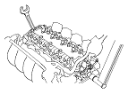
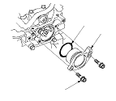

Remoção e Instalação da Placa de Impulso do CMP
Remoção
Retire o conjunto da caixa do filtro do ar.
Retire a câmara do colector da admissão.
Retire as seguintes fichas da cablagem do motor e as braçadeiras da cablagem da cabeça do motor:
Quatro fichas dos injectores
Ficha do sensor 1 da temperatura do líquido de arrefecimento do motor (ECT)
Ficha do sensor da posição da árvore de cames (CMP)
Ficha do sensor da relação ar/combustível (A/F)
Ficha do sensor secundário do oxigénio aquecido (HO2S secundário)
Retire o parafuso de fixação do suporte da cablagem e o cabo de massa e, em seguida, retire o suporte do fixador da cablagem.
Retire a tampa da cabeça do motor.
Retire a tampa de impulso da árvore de cames.
Segure a árvore de cames com uma chave de bocas e, em seguida, desaperte o parafuso.
Retire a placa de impulso da posição da árvore de cames (CMP).
Instalação
Instale a placa de impulso CMP.
Segure a árvore de cames com uma chave de bocas e, em seguida, aperte o parafuso.
Binário Especificado
14 x 1,5 mm 34 N·m (3,5 kgf·m)

Instale a tampa de impulso (A) da árvore de cames com um O-ring (B) novo.
Instale a tampa da cabeça do motor.
Instale o fixador da cablagem e, em seguida,
instale o cabo de massa.
Instale as seguintes fichas da cablagem do motor e as braçadeiras da cablagem da cabeça do motor:
Quatro fichas dos injectores
Ficha do sensor 1 da temperatura do líquido de arrefecimento do motor (ECT)
Ficha do sensor da posição da árvore de cames (CMP)
Ficha do sensor da relação ar/combustível (A/F)
Ficha do sensor secundário do oxigénio aquecido (HO2S secundário)
Instale a câmara do colector da admissão.
Instale o conjunto da caixa do filtro do ar.
